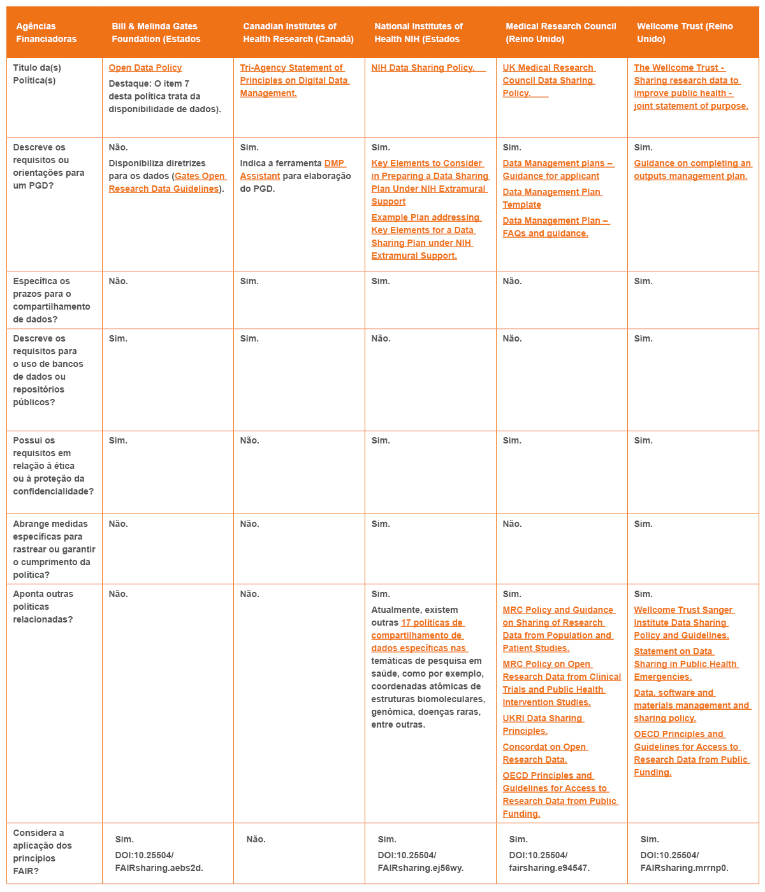

Série 3 | Curso 2
Dados Abertos
Aula 6
Políticas dos financiadores, requisitos das revistas científicas e repositórios de dados em saúde
Seja bem-vindo a aula 6 do seu curso! Como já comentamos anteriormente, o tema da gestão, compartilhamento e abertura de dados oriundos de pesquisa está ganhando cada vez mais força no cenário internacional. Nesta aula, vamos conhecer um pouco das políticas dos financiadores, os requisitos solicitados pelas revistas científicas para a publicação de artigos e as opções de repositórios para o depósito de dados no campo da saúde.
Aproveite o conteúdo e bons estudos!
Financiadores
As agências governamentais de fomento à pesquisa e os financiadores privados estão mais exigentes quanto a gestão, compartilhamento e abertura de dados. Esta mudança vem se operacionalizando através de políticas e orientações sobre boas práticas em pesquisa, especialmente aquelas financiadas com recursos públicos. O Conselho de Pesquisa do Reino Unido (Research Councils UK), por exemplo, estabeleceu como seu o primeiro princípio que "Publicly funded research data are a public good, produced in the public interest, which should be made openly available with as few restrictions as possible in a timely and responsible manner. Nesse sentido, os dados são considerados um bem público que deve estar aberto a todos os interessados e preservado para sua futura reutilização.
O caráter indutor das políticas de financiadores, que recentemente passaram a exigir a elaboração de um Plano de Gestão de Dados (PGD) para a concessão de recursos financeiros para pesquisa, influencia diretamente as instituições de ensino e pesquisa e as práticas de gestão, compartilhamento e abertura dos dados de pesquisadores. Como destacado na aula 5, o Plano de Gestão de Dados (PGD) é um documento no qual o pesquisador descreve e organiza atividades e processos associados ao ciclo de vida dos dados.
Principais políticas e declarações que regulamentam a gestão, compartilhamento e abertura de dados no campo da Saúde
Baixe a tabela com seus links aqui.
Revistas Científicas
As revistas científicas, especialmente as internacionais, estão adotando políticas editoriais que exigem a disponibilização dos dados no processo de submissão e publicação de um artigo. A PLOS One, por exemplo, exige a disponibilização dos dados brutos de pesquisas em repositórios abertos a fim de que possam ser consultados pelos leitores. Já a Nature age em sentido oposto, apenas recomendando essa medida de transparência. Há ainda uma tendência a aceitação de preprints e as propostas de mudanças em torno das formas de avaliação (agora aberta) por pares. Esses são alguns dos desafios que deverão ser enfrentados pelas revistas.
Leia mais neste artigo
Fonte: https://blog.scielo.org/
Repositório de dados em saúde: tipologia e características
Os repositórios cumprem a função de armazenar e disponibilizar dados para terceiros. Certamente, encontrar um repositório de dados compatível com sua pesquisa dinamiza o trabalho do pesquisador. O re3data.org é um catálogo internacional que lista mais de 2 mil repositórios de dados. Ele é uma boa fonte para fonte para os pesquisadores localizarem repositórios que atendam as especificidades de suas pesquisas.
Outra ferramenta relevante é o OpenAIRE Explore, um serviço de pesquisa por publicações, conjunto de dados, software e outros resultados de pesquisa com informações sobre financiadores e comunidades de pesquisadores.
Veja ao lado mais alguns exemplos desses repositórios:
-
Biomedicina, Epidemiologia, Pesquisa Clínica e Saúde Pública
ImmPort : Armazena dados de pesquisas financiados pelo National Institutes of Health (NIH).
Influenza Research Database (IRD): Disponibiliza dados de vigilância epidemiológica de influenza em aves e não humanos, dados clínicos humanos associados a extratos de vírus, características fenotípicas de vírus isolados de extratos e todos os dados genômicos e proteômicos disponíveis em repositórios públicos para vírus influenza.
National Addiction & HIV Data Archive Program (NAHDAP): Coleta, preserva e divulga dados sobre toxicodependência e pesquisa sobre o HIV. Abrange uma ampla gama de drogas legais e ilícitas (álcool, tabaco, maconha, cocaína, drogas sintéticas e outras) e as trajetórias, padrões e conseqüências do uso de drogas, bem como preditores e resultados relacionados.
PubMed Labs: Ferramenta experimental da National Library of Medicine (NLM). que visa melhorar a qualidade da pesquisa e a usabilidade do PubMed.
-
Ciências Humanas e Sociais
Inter-University Consortium for Political and Social Research (ICPSR): Dedicado ao campo das ciências sociais e áreas afins.
Qualitative Data Repository (QDR): Oferece amplo leque de pesquisas qualitativas e multimétodos nas ciências sociais, além de orientações sobre como gerenciar, compartilhar, citar e reutilizar dados qualitativos, contribuindo para a geração de padrões comuns.
-
Multidisciplinares
Dryad Digital Repository: Oferece serviço de curadoria e agrega ampla diversidade de dados subjacentes às publicações científicas.
Figshare: O repositório permite o upload de qualquer tipo de resultado de pesquisa - incluindo pôsteres, apresentações, conjuntos de dados, código etc - expandindo as possibilidades de comunicação entre pares.
Harvard Dataverse: Um repositório de dados que permite o compartilhamento, preservação, citação, exploração e análise dados de pesquisa. Está aberto a todos os pesquisadores, dentro e fora da comunidade de Harvard. Também, é considerada uma tecnologia robusta para uso em repositórios institucionais de dados.
Zenodo: Armazena dados multidisciplinares, software, materiais de conferência e conteúdo educacional e informativo. O acesso ao conteúdo do Zenodo está aberto a todos, apenas para fins não militares.
Plataformas de compartilhamento de dados
Atualmente, as práticas de compartilhamento e abertura de dados ainda são bastante limitadas. No entanto, nos campos nos quais o compartilhamento de dados é uma prática essencial para a realização da pesquisa, existem incentivos para tal, pois os pesquisadores frequentemente estão envolvidos em projetos colaborativos. Veja mais ao lado:
-
F1000Research
F1000Research: Plataforma de publicação de “pesquisa aberta” que oferece publicação imediata de artigos e dados subjacentes - sem intermediação editorial. Oferece revisão por pares aberta e inclusão de dados.
-
OpenScience Framework (OSF)
OpenScience Framework (OSF): Repositório de gerenciamento de projetos, gratuito e de código aberto, que oferece suporte durante todo o ciclo de vida do projeto. Seue fluxo de trabalho, conecta os muitos produtos que os pesquisadores usam para otimizar processos e aumentar a eficiência.
-
Wellcome Open Research
Wellcome Open Research: Plataforma desenvolvida pela agência de financiamento homônima para uso exclusivo de pesquisas financiadas por ela. Objetiva viabilizar suas políticas de acesso aberto e dados abertos, publica diversos tipos de artigos que são submetidos a revisão por pares aberta e indexados no PubMed, entre outros. Todas as pesquisas, incluindo ensaios clínicos, revisões sistemáticas, ferramentas de software, artigos de método e muitas outras, podem ser publicadas independentemente do nível de interesse ou novidade.
Exemplos para doenças infecciosas
Abaixo apresentamos cinco exemplos nos campos das Doenças Infecciosas, Malária, Pesquisas Clínicas, Vigilância Demográfica e de Saúde, além da emergente Humanidades Digitais.
DOENÇAS INFECCIOSAS
- Observatório de Dados de Doenças Infecciosas (Infectious Diseases Data Observatory - IDDO) - Coordenado pelo ‘Centre for Tropical Medicine’ e ‘Global Health” da Universidade de Oxford, oferece uma plataforma de compartilhamento de dados clínicos, laboratoriais e epidemiológicos entre as comunidades de pesquisa em gestão clínica e pesquisa de doenças infecciosas. O seu portfólio, em expansão, inclui Ebola, malária e leishmaniose visceral.
- WorldWide Antimalarial Resistance Network (WWARN) é a plataforma colaborativa do Infectious Diseases Data Observatory (IDDO), que gera recursos e evidências sobre os fatores que afetam a eficácia dos medicamentos antimaláricos.
HUMANIDADES DIGITAIS
- Humanities Commons é uma plataforma elaborada a partir das demandas de pesquisadores do campo das humanidades e oferece diversos serviços, entre eles, o repositório de acesso aberto, o Commons Open Repository Exchange (CORE), para registro e preservação de pesquisas.
PESQUISAS CLÍNICAS
- O Yale University Open Data Access - Projeto YODA disponibiliza dados e incentiva a exploração de recursos adicionais de compartilhamento de dados, incluindo:
- ClinicalStudyDataRequest.com: Consórcio de provedores de dados de estudos clínicos que facilita o acesso a dados em nível de paciente.
- National Sleep Research Resource: Agrega, sistematiza e organiza dados clínicos e de sono de milhares de indivíduos originados em estudos de coorte ou ensaios clínicos, oferecendo ferramentas de exploração e visualização de dados.
- NIH Data Sharing Repositories: Lista de repositórios do NIH nos quais todos os dados estão acessíveis para reutilização. Tais como BioLINCC, ClinicalTrials.gov, dbGaP, NIDDK, GenBank, etc.
- Pfizer Trial Data and Results: Recurso de compartilhamento de dados de testes clínicos da Pfizer.
- Project Data Sphere - Laboratório de biblioteca digital gratuito oferece plataforma na qual a comunidade de pesquisa pode compartilhar, integrar e analisar dados históricos, em nível de pacientes, de ensaios clínicos de câncer de fase III acadêmicos e industriais.
- Supporting Open Access for Researchers (SOAR) - Colaboração entre Duke University School of Medicine e a Bristol-Myers Squibb (BMS) na abertura de dados de protocolos, relatórios completos de estudos clínicos e dados não identificados no nível do paciente.
- Vivli - É uma plataforma de compartilhamento e análise de dados de ensaios clínicos de nível de participante individual concluídos para servir a comunidade internacional de pesquisa.
VIGIL NCIA DEMOGRÁFICA E DE SAÚDE
- International Network for the Demographic Evaluation of Populations and Their Health - INDEPTH é uma rede global de centros de pesquisa em health and demographic surveillance systems (HDSSs), que realiza avaliações longitudinais de saúde e demográficas de populações em países de baixa e média renda (LMICs). Seu repositório de dados INDEPTH Network Data Repository, financiado pela Wellcome Trust, disponibiliza conjuntos de dados (microdados longitudinais anônimos) para orientar prioridades e políticas de saúde com base em evidências científicas atualizadas.
Publicação de dados e as revistas de dados (data journals)
No modelo tradicional de publicação, os conjuntos de dados - tanto aqueles que deram origem aos artigos como aqueles que não foram aproveitados em publicações - não se configuravam como elementos da comunicação científica. Recentemente, os conjuntos de dados passaram a ser reconhecidos como resultados de pesquisa por si mesmos e, como tal, são publicáveis.
Geralmente, os os data papers não incluem interpretação, discussão ou análise (uma exceção pode ser a discussão de diferentes métodos para coletar os dados). Seu diferencial é o compartilhamento de dados em uma estrutura padronizada que, tal qual as publicações tradicionais, são igualmente revisados por pares e citáveis. Aqui, a disponibilização de dados tende a ser mais completa do que a realizada via repositório que podem apenas exigir seus metadados.
Um data paper é uma publicação que compartilha dados potencialmente úteis para terceiros. Ele descreve os métodos usados para criar um conjunto de dados (o software utilizado, descrições sobre seu processamento, formatos de arquivo, etc), sua estrutura, potencial de reutilização e um link para sua localização em um repositório.
Siga as setas e veja alguns exemplos:
Conclusão
Chegamos ao final do nosso curso! Agradecemos por seu empenho, esperando que todas as informações aprendidas por você aqui possam ser aplicadas em sua rotina.
Até um próximo curso. Bom trabalho!